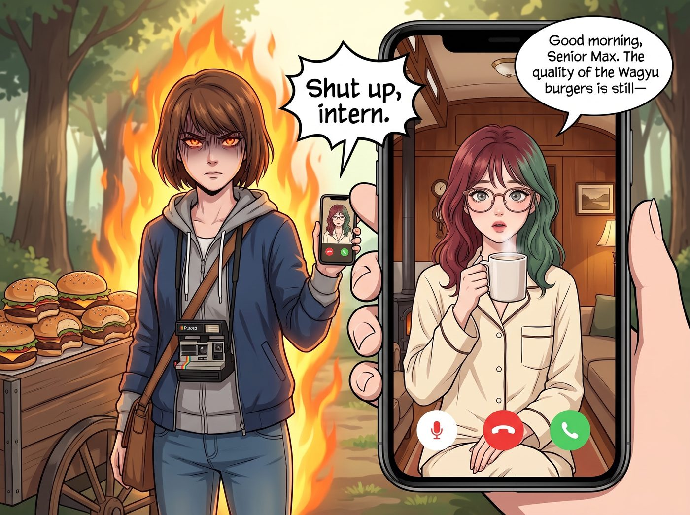
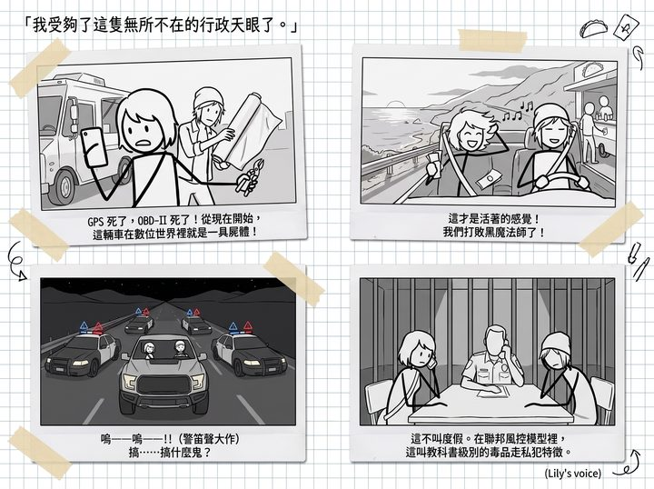

信號黑洞


「我受夠了這隻無所不在的行政天眼了。」
第二天清晨，Max 站在那輛還堆著吃剩一半和牛漢堡的小推車旁，眼神裡燃燒著前所未有的鬥志。她掏出手機，直接撥通了二號車廂的視訊通話。
螢幕亮起，Lily 穿著整潔的睡衣，正端著一杯熱牛奶：「早安，Max 學姐。和牛漢堡的品質還——」
「閉嘴，實習生。」Max 將手機鏡頭拉近，給了 Lily 一個極具壓迫感的、隔著螢幕都能感受到殺氣的「遠程死亡視線」。
「現在，立刻，馬上，告訴我這輛福特猛禽的車載診斷系統（OBD-II）信號收發器藏在哪裡。不要跟我說廢話，不要跟我談合規。告訴我具體位置，否則我現在就把妳的雲端備份硬碟扔進海裡。」
螢幕那頭的 Lily 沉默了三秒鐘，推了推圓框眼鏡：「副駕駛座手套箱下方，拆開防塵板，有一個黑色的小盒子。但學姐，我必須提醒您，強行物理屏蔽原廠遙測信號會違反福特汽車的保固條款，並且……」
「去妳的保固條款！」Chloe 從旁邊一把搶過手機掛斷了通話。
五分鐘後，Chloe 嘴裡叼著手電筒，手裡拿著剪線鉗和一大卷工業級的鋁箔膠帶，整個人鑽進了副駕駛座的儀表板下方。
伴隨著一陣火花和幾句髒話，Chloe 硬生生把那個發射信號的黑盒子扯了下來，然後用厚達三層的鋁箔膠帶和鉛皮將它死死包裹起來，做成了一個完美的法拉第籠（Faraday Cage）。
「好了！」Chloe 拍了拍手上的灰塵，從車底鑽出來，狂野地大笑，「GPS 死了，OBD-II 死了！從現在開始，這輛車在數位世界裡就是一具屍體！」
Max 也進入了極限備戰狀態。
「街頭法則第三條：現金為王。」Max 將那一萬兩千美元的現鈔全部塞進一個破舊的帆布包裡，「從這一秒起，我們不刷任何信用卡，不用任何會員卡！加油只付現金！收費站不走 ETC，全部走人工車道扔硬幣！我就不信，這樣她還能算得出我們在哪裡！」
接下來的十二個小時，是純粹的、屬於公路電影般的極致狂歡。
她們開著那輛在數位世界上「隱形」的猛禽皮卡，沿著加州風景最壯麗的大蘇爾（Big Sur）海岸線狂飆。沒有導航，全靠看路牌；餓了就隨便找一家只收現金的墨西哥塔可（Taco）路邊攤；加油的時候，Chloe 豪邁地拍出一張百元大鈔，連找零都不要。
海風吹拂著她們的頭髮，汽車音響裡放著震耳欲聾的龐克搖滾。
「這才是活著的感覺！Max！我們終於打敗那個黑魔法師了！」Chloe 對著太平洋的夕陽放聲尖叫。
Max 也笑得像個瘋子，她覺得自己這輩子從來沒有這麼自由過。
直到夕陽完全落下，夜幕降臨。
「嗚——嗚——嗚——！！！」
一陣刺耳的警笛聲突然在寂靜的海岸公路上炸響。
Max 轉過頭，驚恐地發現，皮卡車的後視鏡裡，閃爍著令人心悸的紅藍爆閃燈。而且不是一輛警車，是整整四輛加州高速公路巡警（CHP）的重型攔截車，正以戰術包抄的陣型將她們死死逼停在路肩上。
「熄火！把手放在方向盤上！立刻降下車窗！」
擴音器裡傳來警察荷槍實彈的怒吼聲。幾道刺眼的探照燈直接打在 Chloe 和 Max 的臉上。
「搞……搞什麼鬼？」Chloe 徹底懵了，乖乖地舉起雙手。
半個小時後，加州某公路巡警中隊的審訊室裡。
Max 用她被允許的「唯一一次保釋通話」，顫抖著撥通了二號車廂的電話。
「晚上好，Max 學姐。」Lily 的聲音依然軟糯、平靜，彷彿早就等在電話旁了，「加州拘留室的咖啡還合胃口嗎？」
「Lily！這到底是怎麼回事？！」Max 崩潰地對著話筒大喊，「妳舉報了我們嗎？！警察為什麼說我們是跨州毒品走私犯？！」
「我發誓我沒有舉報您們，學姐。我甚至已經十幾個小時沒有您們的定位了。」
Lily 在電話那頭無奈地嘆了口氣，語氣中帶著一種「我早就警告過妳們」的行政悲憫：
「Max 學姐，您們似乎對現代社會的『風控演算法』有嚴重的誤解。
一輛掛著外州車牌的重型越野車，在行駛途中突然人為屏蔽了所有的 GPS 和車載遙測信號（在系統看來，這叫『信號黑洞』）；然後，這輛車沿途所有的消費，全部拒絕使用數位支付，只用連號的百元現鈔進行結算……」
Lily 推了推圓框眼鏡，說出了那個讓 Max 和 Chloe 當場石化的真相：
「在美國國土安全部（DHS）和緝毒局（DEA）的反洗錢與反恐自動識別模型中，這不叫『脫網度假』。這叫作『教科書級別的跨州毒品走私、洗錢或綁架逃亡特徵』。
系統根本不需要我來追蹤您們。當您們試圖用最原始的方式對抗現代消費主義基礎設施時，您們就已經自動觸發了聯邦最高級別的犯罪預警矩陣。」
審訊室裡死一般的寂靜。
Chloe 雙手抱著頭，痛苦地呻吟了一聲。她們以為自己是在追求自由，結果在冰冷的演算法眼裡，她們的行為模式跟墨西哥毒梟簡直一模一樣。
「那……那現在怎麼辦？」Max 虛弱地問。
「請把電話交給警官，學姐。」Lily 敲擊鍵盤的聲音再次響起，充滿了黑魔法師準備下場的自信，「屏蔽自己的車、用自己的現金，都不犯法；他們搜過車，也找不到任何違禁品。這只是一場風控模型的誤判。」
她頓了頓，鍵盤聲沒有停下：「我已經聯絡了 Victoria 學姐家在加州執業的律師團，他們會先透過電話向中隊確認您們的身分，再派人到場。在律師到之前，您們什麼都不用說，什麼都不用簽。」
Max 默默地把手機遞給了旁邊一臉嚴肅的警官。
看著警官接起電話，臉色從嚴厲、到錯愕、再到「這只是一場浪費警力的誤會」的無奈，Max 突然覺得無比疲憊。
她轉過頭，看著同樣生無可戀的 Chloe，苦笑著搖了搖頭。
『規則第 71 條：在 21 世紀，真正的自由是不存在的。當妳試圖從行政黑魔法師的監控網中徹底消失時，妳只會一頭撞進 FBI 的反恐名單裡。最後能把妳撈出來的，還是只有那個黑魔法師。』